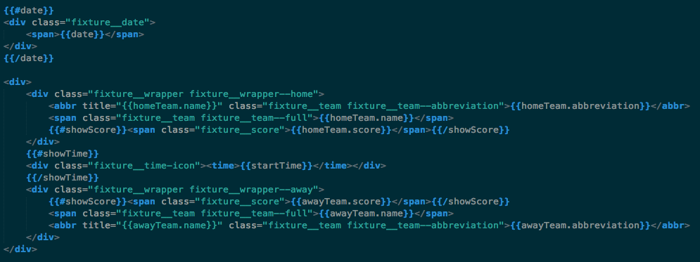
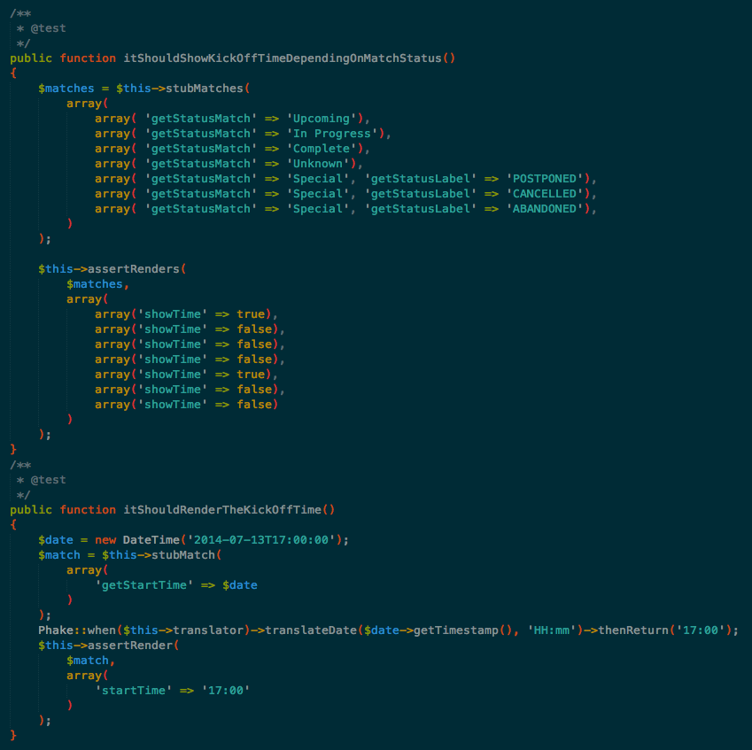
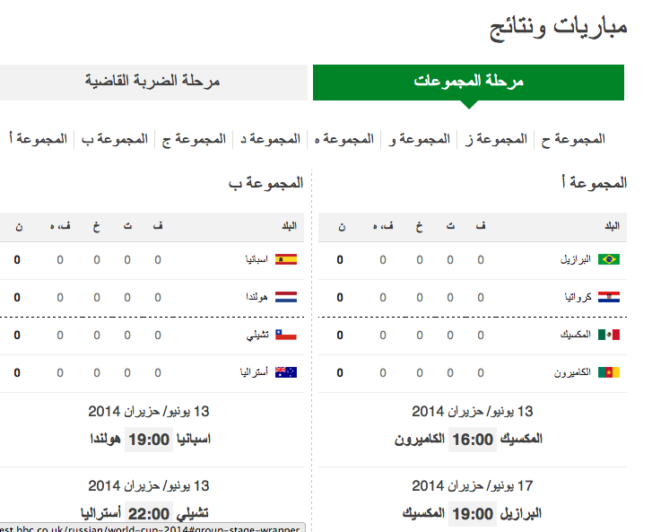
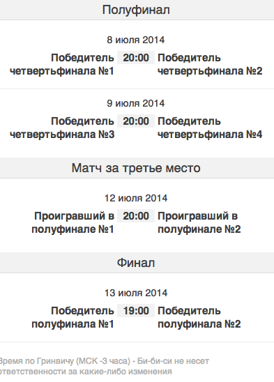

28 languages
5 sprints
137 points
WS Dev - all of them
WS Editorial27
Sport
Hook up the Sport API
Decouple their models
Translate it all
Make it purdy
Desktop and responsive
around 44m
logicless templates
tested view models in presenters
rtl
big words
Responsive iFrame
mustache knock-ons
{{#showNonIFrameComponents}} <div class="group-stage__jumplinks-wrapper"> <ul class="group-stage__jumplinks"> {{#jumplinks}} <li class="group-stage__jumplink{{last}}"> <a href="#{{target}}">{{name}}</a> </li> {{/jumplinks}} </ul> </div> {{/showNonIFrameComponents}}
Monitoring, Runbook, Reviews, Pipeline, etc.
Aka reasons why devs don't wear ties